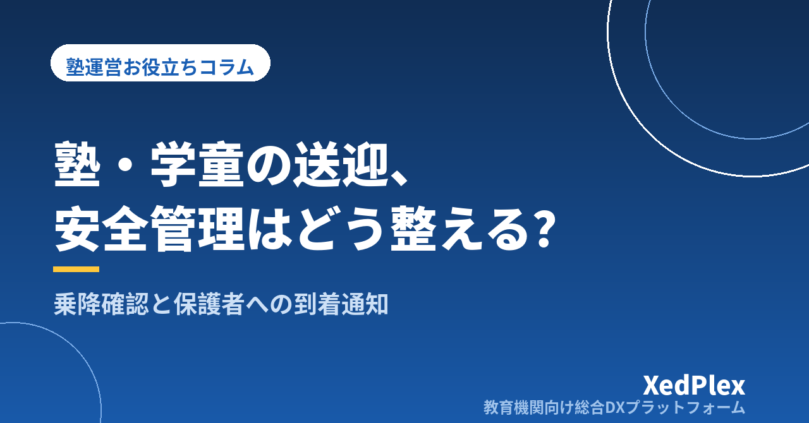

塾・学童の送迎、安全管理はどう整える？｜乗降確認・引き渡しルール・保護者への到着通知を仕組みにする

「今日は学校まで迎えに行く日だったか、保護者が連れてくる日だったか」「帰りの車に乗せたのは全員だったか」──。送迎を行っている塾や学童では、授業や指導とは別のところで、毎日こうした確認が発生します。共働きの家庭が増えるなか、送迎は保護者にとって大きな助けになる一方、運営する側にとっては子どもの安全を直接預かる時間でもあります。
送迎の安全は、運転する人の注意深さだけでは守れません。小さな教室ほど、塾長や少人数のスタッフが授業の合間に運転と確認を兼ねることになり、「いつもの流れ」に頼りがちです。この記事では、送迎を行う塾・学童が、乗降の確認、保護者への引き渡し、到着の通知を仕組みとして整える方法を整理します。車両での送迎だけでなく、スタッフが徒歩で学校へ迎えに行く場合や、保護者のお迎えで帰す場合にも共通する考え方です。
送迎で事故・行き違いが起きやすい3つの場面
送迎のトラブルは、走行中の交通事故だけではありません。日々の運営で起きやすいのは、むしろ次のような「確認のすき間」です。
| 場面 | 起きること | 主な原因 |
|---|---|---|
| 出発前 | 休みの子を迎えに行って待ち続ける。来るはずの子が名簿にない | 欠席・予定変更の連絡が、送迎する人に届いていない |
| 乗り降りのとき | 乗せたつもり・降ろしたつもりで人数が合わない。車内に子どもが残る | 人数を記憶で数えている。降車後に車内を見る手順がない |
| 引き渡しのとき | 誰に引き渡したか分からない。保護者が「まだ帰ってこない」と不安になる | 引き渡す相手と場所のルール、到着を知らせる手段が決まっていない |
3つに共通するのは、「その日の正しい名簿」と「確認した記録」がないことです。逆に言えば、名簿を1つにそろえ、確認の手順を固定し、結果を残すという3点を押さえれば、送迎の不安の多くは仕組みで小さくできます。
送迎を始める前・続ける前に確認しておきたいこと
ルールづくりの前に、運営の前提として確認しておきたい点があります。いずれも、運行の形や地域、施設の種類によって扱いが変わるため、この記事では「何を確認するか」に留めます。
- 車両での送迎に必要な手続き：送迎の費用の受け取り方や運行の形態によって、許可や登録が必要になる場合があります。自教室のやり方が該当するかどうかは、運輸支局などの所轄機関に確認してください
- 保険の補償範囲：送迎に使う車の保険が、業務としての送迎や同乗する子どもを補償の対象にしているかを、保険会社や代理店に確認します。徒歩での引率中の事故についても同様です
- 送迎用の車両に関する安全のルール：幼稚園や保育所などの送迎用バスについては、子どもの所在確認や安全装置に関するルールが国によって定められています。自施設が対象になるかどうか、自治体から求められている基準があるかどうかは、所管の部署に確認してください
制度上の義務があるかどうかにかかわらず、乗降時に人数を数えること、降車後に車内を見回ることは、子どもを乗せるすべての送迎に通じる基本です。自治体が公開している送迎の安全管理マニュアルやチェックシートは、小さな教室が手順を作るときの参考になります。
最初に決める送迎ルール6項目
送迎の運用は、次の6項目を文書にして、保護者とスタッフの両方に同じものを渡すところから始めます。
| 項目 | 決めること |
|---|---|
| 1. 対象と範囲 | 送迎する曜日・時間帯、対象の学校や地域、乗降する場所。「頼まれたら寄る」という例外を作らない |
| 2. 申込と変更の締切 | 送迎の利用をいつまでに申し込むか。当日の変更・欠席は何時までに、どの窓口へ連絡するか |
| 3. 乗降場所と待ち方 | 学校や自宅付近のどこで待つか。子どもが先に着いたとき、車が遅れたときにどうするか |
| 4. 引き渡す相手 | 帰りに引き渡してよい人（保護者・祖父母・きょうだいなど）を事前に登録する。登録外の人が来たときの対応 |
| 5. 不在・遅れのとき | 引き渡し場所に保護者がいないとき、道路事情で遅れるときの連絡手順と、教室へ連れ帰るかどうかの判断 |
| 6. 中止の基準 | 大雨・台風・積雪などで送迎を中止する基準と、いつまでに・どの手段で知らせるか |
とくに重要なのは2の変更・欠席の連絡窓口を1つにすることです。講師個人への連絡や、子どもからの口頭の伝言が混ざると、送迎する人が持つ名簿と実際の予定がずれます。窓口の一本化の考え方は「塾の欠席・振替管理のルール作りと運用」で、個人の連絡先に頼る運用のリスクは「塾の保護者連絡、講師の個人LINE頼みは危険？」で整理しています。
乗降確認は「名簿・点呼・車内確認」の3点を型にする
乗り降りの確認は、慣れるほど省略されやすい作業です。毎回同じ順番で行い、行ったことを記録に残す形にしておきます。
1. 出発前に「今日の送迎名簿」を確定する
出発の少し前の時刻を締切と決め、その時点までの欠席・変更を反映した名簿を1枚用意します。紙でもスマートフォンの画面でも構いませんが、送迎する人が見る名簿は1つだけにします。締切後に入った連絡は、窓口の担当が送迎する人へ直接伝える、と流れも決めておきます。
2. 乗るとき・降りるときに一人ずつ点呼する
人数を頭で数えるのではなく、名簿の名前と顔を一人ずつ照らし合わせ、乗車・降車それぞれに印をつけます。名簿にいるのに現れない子がいた場合は、その場で待ち続けたり出発したりせず、決めた手順（教室へ連絡→教室から保護者へ確認）に沿って動きます。
3. 降車後に車内を後ろまで見る
全員が降りたあと、座席の足元や最後列まで歩いて見回り、忘れ物と人の残りがないことを確認します。「全員降りたはず」という思い込みを防ぐため、名簿の点呼とは別の手順として必ず行い、確認した人の名前と時刻を記録します。
可能であれば、運転する人とは別に、乗降の確認を担当する人を置きます。一人で兼ねる場合は、エンジンを止めてから点呼する、確認が終わるまで発進しない、という順番を固定しましょう。新しく送迎を担当するスタッフには、最初の数回は経験者が同乗して手順を見せます（同席による教え方は「個人塾でもできる講師研修と指導の標準化」でも紹介しています）。
徒歩で学校まで迎えに行く場合も同じです。出発前の名簿、合流時の点呼、教室に着いたときの人数確認の3点を行います。
保護者への到着通知と、帰りの引き渡しルール
保護者が送迎で最も気にしているのは、「無事に着いたか」「無事に帰路についたか」の2点です。ここが見えないと、不安は問い合わせの電話や連絡として表れます。
到着・出発を「毎回、同じ形で」知らせる
教室に到着したとき、教室を出たときの2つの時点で、保護者へ通知が届く形を作ります。スタッフが一人ずつ手で送ると抜けや遅れが出るため、入退室の記録と通知が連動する仕組みを使うと、送迎の有無にかかわらず同じ形で知らせられます。入退室の記録方法の比較は「小さな塾でもできる入退室管理」を参考にしてください。通知が毎回届くことで、「通知が来ない＝何かあったかもしれない」と保護者も早く気づけるようになります。
引き渡しは「登録した人に、決めた場所で」
帰りの引き渡しでは、事前に登録された人であることを確認して引き渡し、時刻を記録します。登録外の人が迎えに来た場合は、その場で保護者へ連絡して確認が取れるまで引き渡さない、と決めておきます。断りにくい場面だからこそ、ルールとして事前に保護者へ伝えておくことが、現場のスタッフを守ります。
遅れるとき・保護者が不在のときの連絡
道路の混雑などで到着が遅れると分かった時点で、該当する保護者へ短く知らせます。
引き渡し場所に保護者がいない場合は、子どもを一人で降ろさず、連絡がつくまで車内または教室で預かるのが基本です。何分待つか、教室へ連れ帰る場合の迎えの方法を、あらかじめルールに書いておきます。
ヒヤリとした出来事を記録して手順に戻す
「名簿と人数が一瞬合わなかった」「連絡が締切後に届いた」といった出来事は、事故に至らなくても日付・状況・対応を短く記録します。月に一度見返し、ルールや手順のどこを直すかを決めると、送迎の仕組みは少しずつ強くなります。保護者から送迎に関する指摘を受けたときの記録と再発防止の進め方は、「塾への保護者クレーム対応の手順」と同じ考え方です。
まとめ
送迎の安全は、運転の注意だけでなく、確認のすき間をなくす仕組みで守ります。車両での送迎に必要な手続きや保険の範囲は所轄機関・保険会社に確認し、送迎の範囲・変更の締切・引き渡す相手など6項目のルールを文書にして保護者と共有する。出発前に名簿を1つに確定し、乗降時は一人ずつ点呼し、降車後は車内を後ろまで見る。教室への到着と出発は毎回同じ形で保護者に知らせ、引き渡しは登録した人に行って記録を残す。
すべてを一度に整える必要はありません。まずは今の送迎について、「今日の名簿はどこにあるか」「変更の連絡は誰に届くか」「降車後に車内を見たことをどう残しているか」の3点を書き出してみてください。あいまいな箇所が、最初に手を入れるところです。
この記事を書いた運営より
私たちは、個人経営・小規模の学習塾向けに、生徒管理・QRコードでの入退室記録・月次請求・保護者へのLINE/メール通知・AIによる学習支援までをひとつにまとめた教育機関向け総合DXプラットフォーム「XedPlex（ゼドプレックス）」を開発・提供しています。初期費用は0円、料金は生徒1名あたり月額300円（税込）から。生徒50名の塾なら月15,000円（税込）です。全国8つの教室で導入されており、導入塾には紹介ホームページの無料作成も行っています。機能の詳細説明はこちら。
XedPlexの詳細を見る